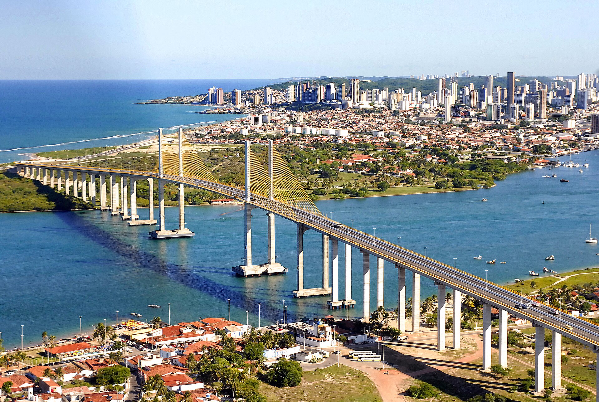

Meu blog tech
Par: Caio Pompeu Paolucci Azevedo
Boas-vindas ao meu novo blog! Aqui vou compartilhar informações sobre a cidade de Natal, no Rio Grande do Norte.
A história da cidade de Natal

A cidade de Natal foi fundada no dia 25 de Dezembro de 1599, por isso o nome, afinal foi fundada no dia de Natal, a cidade foi criada com o intuito de defender a costa de invasões francesas. seu intuito desde dois anos antes, com a criação da Fortaleza dos Reis Magos. Não existe um consenso entre os historiadores sobre o real fundador da cidade, pois, durante a dominação holandesa no Rio Grande do Norte, os documentos sobre a fundação de Natal foram destruídos. Em 1631, uma frota de quatorze navios partiu do Recife e desembarcou em Ponta Negra com o objetivo de conquistar a capitania do Rio Grande, tentativa que, porém, fracassou. Somente em dezembro de 1633 é que de fato teve início a ocupação holandesa, quando os holandeses, ao chegarem a Natal, feriram o capitão-mor do Rio Grande, Pero Mendes Gouveia, e tomaram a Fortaleza da Barra do Rio Grande, que passou a se chamar Castelo de Keulen. O forte, que antes era de taipa, passaria a ser de alvenaria e Natal virou Nova Amsterdã, em referência à capital holandesa, a ocupação durou até 1654. Em 1817, Natal (que na epoca pertencia a Paraiba) se juntou a Insurreição Pernambucana, quando Pernambuco foi derrotado foi criada a comarca de Natal, desmembrando-se da comarca da Paraíba No ano de 1822 Dom Pedro declarou a independencia do Brasil em São Paulo, porém, devido à distância, a notícia demorou para chegar ao Rio Grande do Norte, que se tornou uma província do Império do Brasil. Em comemoração a independência, Natal, que tinha cerca de 700 habitantes na época, a festejou em 22 de janeiro de 1823. Em 1856, Natal ganhou o Cemitério do Alecrim, o primeiro da cidade.Em 1862 é concluída a construção da torre da Igreja Matriz de Nossa Senhora da Apresentação. Em 4 de agosto de 1878, foi inaugurado o serviço telegráfico. Em 28 de setembro de 1881, foi inaugurada a Estação da Ribeira, a estação ferroviária mais antiga do Rio Grande do Norte, hoje administrada pela Companhia Brasileira de Trens Urbanos (CBTU). Após a proclamação da república, Rio Grande do Norte se transforma em um estado, permanecendo Natal como sua capital. A segunda metade do século XIX foi marcada pelo desenvolvimento da cidade a partir do ciclo do algodão, às margens do rio Potengi, na região onde hoje está localizado o Porto de Natal. As primeiras décadas do século XX foram marcadas por uma intensa modernização da cidade. Em 1901, foi criado o bairro Cidade Nova, que hoje corresponde aos bairros de Tirol e Petrópolis. No dia 24 de março de 1904, foi inaugurado o Teatro Carlos Gomes, atual Teatro Alberto Maranhão. No mesmo ano chegou a iluminação elétrica a gás na Cidade Alta Em 29 de dezembro de 1909, o Papa Pio X, através da bula Apostolicam in Singulis, criou a Diocese de Natal, desmembrada da Diocese da Paraíba, e a Igreja Matriz de Nossa Senhora da Apresentação tornou-se a catedral da nova diocese, cujo território abrangia todo o estado do Rio Grande do Norte. em 1911, outros fatos históricos foram a criação do bairro do Alecrim e as inaugurações do primeiro telefone e dos primeiros bondes elétricos, além da chegada do cinema. Foi também construída a primeira usina elétrica, substituindo a iluminação a gás Um dos pontos mais importantes da história natalense foi certamente a Segunda Guerra Mundial,Em 28 de janeiro de 1943, chegou ao porto de Natal o navio USS Humboldt, trazendo o presidente dos Estados Unidos, Franklin Delano Roosevelt, que voltava da Conferência de Casablanca, no atual Marrocos. Na ocasião, Roosevelt se reuniu com o presidente brasileiro, Getúlio Vargas. Este encontro resultou na Conferência do Potengi, um acordo que discutiu a entrada do Brasil no conflito e deu origem à Força Expedicionária Brasileira (FEB). Com o advento da Segunda Guerra Mundial, a cidade continuou seu ritmo de crescimento e evoluiu com a presença de contingentes militares brasileiros e aliados, particularmente dos Estados Unidos. Uma maior relação entre natalenses e militares estadunidenses foi estabelecida, com a realização de inúmeros bailes, tendo como consequência uma espécie de "entrada" de vários ritmos musicais vindos do exterior e, assim, uma mudança de hábitos do município. A população do município, que era de 54 836 habitantes em 1940, quase dobrou em uma década, chegando a 103 215 pessoas em 1950. A localização de Natal próxima da "esquina da América do Sul" fez com que o Departamento de Guerra dos Estados Unidos considerasse a cidade como "um dos quatro pontos mais estratégicos do mundo", ao lado do Canal de Suez, no Egito, e dos estreitos de Bósforo, na Turquia, e Gibraltar, entre a África e a Europa. Em agosto de 1954, o presidente Café Filho assumiu a presidencia após o suicidio de Vargas, sendo até os dias de hoje, o unico Natalense e Potiguar a ocupar o cargo. Em 1988 foi inaugurada a nova Catedral Metropolitana, substituindo a primitiva Igreja de Nossa Senhora da Apresentação, cujo tamanho era insuficiente para acomodar o grande número de fiéis que a frequentavam. Em 16 de janeiro de 1997, por lei estadual, foi criada a Região Metropolitana de Natal, na época constituída pela capital e outros cinco municípios potiguares. Em 1999 Natal completou 400 anos de sua fundação. Como parte das comemorações, foi inaugurado o Pórtico dos Reis Magos. Em novembro de 2007 após 3 anos de obra, a famosa Ponte Newton Navarro foi finalmente inaugurada, conectando as zonas norte e leste, separadas pelo Rio Potengy Em 2013, dois dias após a prefeitura voltar a anunciar um aumento na passagem do ônibus, ocorreram novos protestos contra a medida, que se intensificariam no mês seguinte, tornando Natal pioneira nas "Jornadas de Junho". No ano seguinte, foi inaugurada a Arena das Dunas, que subistituiu o Machadão, a linda arena foi sede de 4 partidas da Copa do Mundo FIFA 2014.
Geografia de Natal
O relevo do município, com altitudes inferiores a cem metros, é constituído pela planície costeira, que abrange uma série de terrenos planos de transição entre o mar e os tabuleiros costeiros, alterados pela presença de dunas, muitas famosas na cidade sol. O tipo de solo predominante é a areia quartzosa distrófica, com textura formada por areia, baixo nível de fertilidade e excessiva drenagem. Há ainda os solos indiscriminados de mangue, nas margens do rio Potengi, e uma pequena porção do latossolo vermelho amarelo, no extremo sudoeste do município. O município possui seu território localizado dentro de um conjunto de três bacias hidrográficas, sendo a do rio Potengi a maior delas, cobrindo 31,19% da área de Natal, seguido pelas bacias dos rios Doce (23,43%) e Pirangi (15,3%), estando os 30,9% restantes na faixa litorânea oriental de escoamento difuso. Dois importantes rios de Natal são o Potengi, que nasce no agreste do Rio Grande do Norte e percorre 176 quilômetros, desembocando no Oceano Atlântico, e o Jundiaí, afluente do Potengi. Natal possui clima tropical chuvoso com verão seco, com amplitudes térmicas relativamente baixas e umidade do ar relativamente alta, devido à sua localização no litoral, tornando o efeito da maritimidade bastante perceptível. A capital potiguar ostenta o título de Cidade do Sol em função de sua elevada luminosidade solar, a maior dentre as capitais brasileiras, que ultrapassa 300 dias de sol por ano. Natal não é uma cidade conhecida por chover, tendo cerca de 80 dias de chuva por ano, concentrados entre março e julho. A menor temperatura ja registrada em Natal foi cerca de 14,8 graus, ja a maior foi 36,8, a temperatura média da cidade de Natal é 26,5. A capital Potiguar possui cerca de 30 % do seu território coberto por área verde, entre eles se destaca o Parque das Dunas, o seegundo maior parque urbano do país.
Cultura de Natal
A culinária natalense é diversificada. A cidade oferece uma variedade de pratos típicos aos visitantes. Vários pratos típicos de Natal baseiam-se em frutos do mar e peixes, e também apresentam na sua constituição vários tipos de tempero e ingredientes diferentes. Alguns desses pratos pertencem à culinária nordestina, de forma semelhante à da região sul do Brasil. Entre os vários pratos típicos que a cidade oferece, destacam-se o baião de dois, a carne de sol, o cuscuz com frango, a galinha ao molho pardo (galinha cabidela), a paçoca e a ginga com tapioca, esse sendo patrimonio cultural. Normalmente entre o final de novembro e o início de dezembro, no centro da cidade, ocorre o Festival Gastronômico do Beco da Lama, com uma variedade de pratos, além de apresentações musicais e artes plásticas. A cultura musical natalense varia em vários ritmos, e destes são influenciados vários grupos musicais e artistas. Destaque para a banda Grafith, um dos conjuntos mais antigos ainda em atividade da cidade, surgido ainda nos anos 1980. Tal grupo une um som de apelo popular, unindo vários gêneros como o samba-reggae, arrocha, bolero, brega e a pisadinha. No forró, destacam-se grupos como Cavaleiros do Forró que se apresentam em grandes eventos relacionados ao gênero, como festas de São João. Natal também é sede do Festival de Música Potiguar Brasileira, um evento realizado anualmente e organizado pela Universidade Federal do Rio Grande do Norte que premia por voto popular e avaliação de um júri especializado as melhores obras da música potiguar. O artesanato é um dos principais simbolos de Natal, principalmente na Feira Internacional de Artesanato. A vida noturna tambem é famosa, principalmente nas praias de Ponta Negra, dos Artistas, na Ribeira, que recebe vários artistas locais, nacionais e internacionais dos mais variados estilos no Festival DoSol No final de dezembro e início de janeiro ocorre a tradicional festa dos Santos Reis, copadroeiros de Natal, no bairro homônimo. A festa é comemorada desde a construção do Forte dos Reis Magos, em 1598, e se inicia no dia 28 de dezembro. Sua programação inclui a missa de abertura e os novenários, além da programação sociocultural, que inclui apresentações de bandas musicais e barracas gastronômicas. Os festejos se encerram no dia 6 de janeiro, feriado municipal, com missas e a procissão com a imagem dos Reis Magos. O carnaval e a festa junina tambem são muito famosos, outra festividade muito famosa é o o Carnatal, que ocorre em Dezembro, a maior micareta do Brasil, que já entrou para o Guinness Book como o maior carnaval fora de época do mundo. O evento conta com desfiles de blocos e trios elétricos locais e de outros estados do Brasil. Em novembro também acontece a festa de Nossa Senhora da Apresentação, que se inicia no dia 11 com a procissão das capelinhas saindo da Igreja Matriz de Nossa Senhora da Apresentação (antiga catedral) em direção à Catedral Metropolitana, onde é celebrada a missa de abertura. Entre os dias 12 e 20 acontecem os novenários em honra à padroeira de Natal e, no dia 21, acontece uma vasta programação que começa com a vigília da Apresentação, a partir da meia-noite, na Pedra do Rosário, às margens do rio Potengi. Durante a madrugada é realizada uma procissão fluvial no curso do rio, que sai do Iate Clube em direção à Pedra do Rosário e, ao amanhecer, acontece a primeira missa do dia no local. À tarde acontece a tradicional procissão com a imagem da padroeira, percorrendo algumas ruas da cidade, saindo da antiga catedral em direção à nova, onde ocorre a missa de encerramento da festa. Natal é tido como a porta de entrada para o turismo no Rio Grande do Norte, recebendo anualmente um fluxo de mais de dois milhões de turistas, tanto nacionais quanto internacionais. Dentre os principais pontos turísticos estão: Praia de Ponta Negra, a mais movimentada da cidade, que abriga o cartão-postal de Natal e um dos principais do estado, o Morro do Careca; a Fortaleza dos Reis Magos, marco do surgimento da cidade, na foz do rio Potengi; o Centro de Turismo, antiga cadeia pública; o Parque das Dunas, área de preservação ambiental do estado e a Via Costeira (RN-301), oficialmente Avenida Senador Dinarte Mariz, uma via entre o Oceano Atlântico e o Parque das Dunas, que liga as praias de Ponta Negra e Areia Preta, abrigando o Centro de Convenções de Natal e os principais hotéis cinco estrelas da cidade. São praias de Natal, fora Ponta Negra: Areia Preta, no bairro homônimo, cujo nome se deve à presença de falésia em cor de tom escuro; dos Artistas, no passado a principal praia da cidade; do Forte, que possui arrecifes, formando piscinas naturais, e onde se localiza o Forte dos Reis Magos; do Meio, entre as duas praias anteriores e, por último, a praia da Redinha, a única da zona norte da cidade. Entre as praias do Forte e Redinha está a Ponte Newton Navarro, que liga os bairros de Santos Reis e Redinha. Outros pontos turísticos do município são o Busto de Padre João Maria, o Canto do Mangue, a Catedral Metropolitana de Nossa Senhora da Apresentação, o Farol de Mãe Luíza, o Mercado Público da Redinha, o Midway Mall, Natal Shopping, a Praça das Flores e o Praia Shopping. A cidade se destaca em diversos esportes. O futebol é popular entre os natalenses, que lançaram nomes importantes do futebol brasileiro, como Marinho Chagas (ídolo do Botafogo e ABC), Alberi (Maior ídolo da história do ABC) Carlos Moura Dourado (ídolo do Sport de Recife e do América)e José Ivanaldo de Souza (Maior idolo da história do América) por exemplo. Natal também conta com três dos principais times do estado, o América Futebol Clube (conhecido popularmente como América de Natal), o ABC Futebol Clube e o Alecrim Futebol Clube, todos com participações em divisões do Campeonato Brasileiro. O América e o ABC protagonizam uma das mais clássicas rivalidades do futebol nordestino, disputada no chamado Clássico Rei. Dentre os estádios de futebol se destacam a Arena das Dunas, construída no lugar do Estádio João Machado para a Copa do Mundo FIFA de 2014; o Estádio Maria Lamas Farache (conhecido popularmente como Frasqueirão), de propriedade do ABC; e o Estádio Juvenal Lamartine, que foi inaugurado na década de 20, sendo tombado como patrimônio histórico e cultural do estado. Natal também possui equipes e/ou praticantes de modalidades como surfe, futebol de areia, ciclismo, voleibol, atletismo e futebol americano, dentre outros. Nos esportes aquáticos a vela tem um papel importante, com a prática de iatismo, regatas e velejadas através de clubes náuticos, a exemplo do Iate Clube de Natal. Apelidada de "Capital Mundial do Buggy", Natal possui a maior frota de buggies do mundo. Além dos estádios de futebol, os principais locais utilizados para a prática de esportes incluem o Ginásio Marcelo de Carvalho e o Ginásio Nélio Dias. Além de ser uma das doze cidades brasileiras sedes da Copa do Mundo de 2014, tendo recebido quatro jogos no estádio Arena das Dunas, sendo eles: México 1 x 0 Camarões (13 de junho - Grupo A) Gana 1 x 2 Estados Unidos (16 de junho - Grupo G) Japão 0 x 0 Grécia (19 de junho - Grupo C) Itália 0 x 1 Uruguai (24 de junho - Grupo D). A capital potiguar por vezes é palco de eventos esportivos de relevância nacional e internacional. Em 2011, abrigou o Campeonato Mundial de Basquete Master, tornando-se a primeira cidade brasileira a sediar este tipo de evento. Alguns outros eventos de importância nacional e internacional que a cidade já recebeu foram o Torneio Internacional de Ginástica (2007), o 1º Meeting-Brasil de Ginástica Artística (2011), o Campeonato Brasileiro de Judô Sub-23 (2014) e o Campeonato Brasileiro de Jiu-Jitsu (2015).
Política de Natal
De acordo com a lei orgânica de Natal, promulgada em 3 de abril de 1990, são poderes do município, independentes e harmônicos entre si, o executivo e o legislativo. O poder executivo, cuja sede é o Palácio Felipe Camarão, é representado pelo prefeito, auxiliado pelo seu gabinete de secretários. O poder legislativo é representado pela Câmara Municipal, formada, desde 2013, por 29 vereadores. Cabe à casa legislativa elaborar e votar leis fundamentais à administração e ao executivo, especialmente o orçamento municipal. Natal também é sede de uma comarca do poder judiciário estadual. Por ser a capital do estado do Rio Grande do Norte, Natal sedia os poderes executivo (Centro Administrativo do Estado, sede do governo estadual), legislativo (Assembleia Legislativa do Rio Grande do Norte) e judiciário (Tribunal de Justiça do Rio Grande do Norte) estaduais. De acordo com o Tribunal Superior Eleitoral, a capital potiguar encerrou 2024 com 575 688 eleitores aptos a votar (21,75% do eleitorado do Rio Grande do Norte), distribuídos em cinco zonas eleitorais (1ª, 2ª, 3ª, 4ª e 69ª). Oficialmente, Natal possui 6 cidades irmãs, sendo elas:Belém, Palestina. Córdova, Argentina. Fortaleza, Brasil. Guadalajara, México. Lisboa, Portugal e Porto Alegre, Brasil. Além das cidades irmãs, Natal possui duas cidades parceiras, ambas capitais estaduais, com as quais mantém um estreito relacionamento e convênio turístico. São elas: Rio de Janeiro e Salvador. A cidade ainda abriga oito consulados, sendo sete de países europeus (Alemanha, Espanha, França, Itália, Noruega, Países Baixos e Portugal) e um da América do Sul, o Chile. O município de Natal está dividido em quatro regiões administrativas (reconhecidas pelo IBGE como subdistritos), também chamadas de zonas: Norte, Sul, Leste e Oeste, além de uma área reservada ao Parque das Dunas, uma área de proteção ambiental que cobre um total de 1 203,98 hectares (12,0398 km²). A Zona Norte, separada das demais pelo rio Potengi, é a maior delas tanto em área (5 888,5 ha, ou 58,885 km²) quanto em população, com 275 512 habitantes no censo de 2022, número este superior à população de qualquer outro município do Rio Grande do Norte (inclusive Mossoró, o segundo mais populoso do estado). Nesta zona estão localizados tanto o bairro mais populoso da cidade quanto o menos populoso, sendo eles, respectivamente, Nossa Senhora da Apresentação (76 177 habitantes) e Salinas (1 042 residentes). Por outro lado, a Zona Leste é a menor em tamanho territorial, com cerca de 1 600 ha (16 km²) e também a menos populosa, tendo mais de 101 mil habitantes. Nela está o menor bairro natalense em área, Areia Preta, com apenas 0,3217 km² (3 217 ha), enquanto o maior é Ponta Negra, na Zona Sul, cobrindo uma superfície de 1 382,03 ha (13,8203 km²). A cidade possui um total de 37 bairros, sendo Parque das Colinas o mais recente, criado em 2026, desmembrado de Candelária. Entre 2010 e 2022, o bairro de Ponta Negra, na Zona Sul, apresentou o maior crescimento populacional, de 24 681 para 35 151 habitantes, um aumento de 42,4% no período, enquanto Potengi, na Zona Norte, viu sua população encolher em 16%, de 57 848 para 48 596 moradores. O Produto Interno Bruto (PIB) de Natal é o maior do estado do Rio Grande do Norte. De acordo com dados do IBGE, relativos a 2009, o PIB do município era de R$ 10 369 581 mil., concentrando, sozinha, cerca de 40% de todo o PIB estadual. 1 444 513 mil são de impostos sobre produtos líquidos de subsídios a preços correntes. O PIB per capita é de R$ 12 862,25. A principal fonte econômica está centrada no setor terciário, com seus diversos segmentos de comércio e prestação de serviços de várias áreas, como na educação e saúde. Em seguida, destaca-se o setor secundário, com complexos industriais de grande porte. De acordo com o IBGE, a cidade possuía, no ano de 2009, 22 166 unidades locais, sendo que 20 657 dessas empresas e estabelecimentos comerciais eram atuantes e havia um total de 594 025 trabalhadores, sendo que 311 104 eram do tipo "pessoal ocupado total" e 282 921 do tipo "ocupado assalariado". Salários juntamente com outras remunerações somavam 5 165 331 reais e o salário médio mensal era de 3,1 salários mínimos. Por possuir toda a sua população vivendo na zona urbana, o município possui pouca tradição no setor primário. Na pecuária, em 2010 havia um rebanho de 1 467 bovinos, produzindo 117 mil litros de leite, 295 suínos, 3 645 galos, frangos, frangas e pintos, 25 430 galinhas, com uma produção de 622 mil dúzias de ovos. No Censo Agropecuário de 2006 foram registrados 46 estabelecimentos agropecuários de produtores individuais, com uma área produtiva de 163 ha, 2 cooperativas (372 ha), apenas uma sociedade pessoal ou consórcio e cinco sociedades anônimas (64 ha). No PIB municipal, o valor adicionado bruto da agropecuária em 2009 foi de 15 241 reais. Natal se destaca pela produção industrial diversificada, com foco nas indústrias de construção civil e transformação, além de possuir um polo das indústrias de confecção e têxteis, Natal conta ainda com um distrito industrial, o primeiro do estado, abrigando a sede da Federação das Indústrias do Estado do Rio Grande do Norte (FIERN), organização fundada em 27 de fevereiro de 1953 e reconhecida apenas no ano seguinte, por meio de uma carta sindical. A modernização do comércio em Natal começou sobretudo a partir da década de 1940, quando norte-americanos visitaram a cidade, durante a época da Segunda Guerra Mundial. Hoje, Natal tem expandido suas atividades de comércio e serviços de informação, apresentando grande quantidade de supermercados e de hipermercados, o que fez com que a cidade passasse a ser chamada pelos empresários de "Paraíso dos supermercados". A cidade possui seis shoppings centers, sendo que o principal deles é o Midway Mall, o maior shopping do Rio Grande do Norte, localizado no bairro Tirol, além do Shopping Cidade Jardim, na Avenida Engenheiro Roberto Freire; o Natal Shopping, no bairro da Candelária; o Praia Shopping, em Ponta Negra; o Norte Shopping, na zona norte e o Shopping Via Direta, em Lagoa Nova.
Demografia de Natal
Após décadas de crescimento expressivo, a população de Natal encolheu 6,52% entre os dois últimos censos demográficos, a segunda maior queda dentre as capitais estaduais e, em números absolutos, a sétima maior dentre os municípios do Brasil. Com 803 739 habitantes em 2010, esse número caiu para 751 300 no censo de 2022. Essa queda populacional fez com que o município caísse uma posição a nível regional, passando da sétima para a oitava colocação, e da 20ª para 24ª posição a nível nacional. Ainda assim, Natal continua sendo o município mais populoso do Rio Grande do Norte, possuindo também a maior densidade populacional dentre os municípios potiguares (4 488,03 hab./km²) e 100% da população urbana. Em contrapartida, todos os seus municípios vizinhos registraram aumento na população, com destaque para Parnamirim e principalmente Extremoz. Atual Catedral Metropolitana de Nossa Senhora da Apresentação, sé arquiepiscopal desde 1988. A idade mediana da população é de 36 anos, sendo maior em amarelos e indígenas (40 anos) e menor em pardos (35 anos). A razão de sexo era de 86,91 (8 691 homens para cada 10 000 mulheres), com uma média de 2,77 habitantes por domicílio. No quesito cor ou raça, grande parte da população é parda (46,63%) ou branca (43,22%), havendo também pretos (9,8%) e uma minoria de amarelos e indígenas, cada um com 0,17%. A população natalense é miscigenada e descende de portugueses, africanos e indígenas. Conforme um antigo estudo genético, datado de 1982, a ancestralidade encontrada foi 58% europeia, 25% africana e 17% indígena. O desenvolvimento da capital e de sua região metropolitana provocou a atração de pessoas de outras partes do estado ou mesmo do país, que vêm principalmente em busca de trabalho e melhores condições de vida. Grande parte dos novos habitantes vão para as áreas próximas à capital, o que fez com que surgisse uma conurbação entre Natal e municípios do entorno. Ainda segundo o censo de 2022, mais da metade (58,63%) dos habitantes acima dos dez anos eram católicos, 24,62% evangélicos, 2,08% espíritas e 0,54% umbandistas e candomblecistas. Outros 9,91% não tinham religião, 0,02% seguiam tradições indígenas, 0,12% não declararam e 0,04% não souberam sua preferência religiosa. Entre 2000 e 2010, o percentual da população que vivia com renda domiciliar per capita inferior a 140 reais caiu de 24,7%, percentual que reduziu para 11,8%, apresentando uma redução de 52,8%. Em 2010, 88,2% da população vivia acima da linha de pobreza, 7,57% entre as linhas de indigência e pobreza e 4,23% abaixo da linha de indigência. No mesmo ano, o valor do índice de Gini era de 0,61 e os 20% mais ricos contribuíam com 66,17% da renda municipal, valor mais de 24 vezes maior do que a participação dos 20% mais pobres, de apenas 2,72%. O Índice de Desenvolvimento Humano (IDH-M) do município era de 0,763, considerado alto pelo Programa das Nações Unidas para o Desenvolvimento (PNUD), sendo o segundo maior do Rio Grande do Norte, atrás somente de Parnamirim, e o 320º do Brasil. Segundo a prefeitura, existem registros de loteamentos irregulares, favelas, mocambos, palafitas ou assemelhados, sendo que em 2022 146 017 habitantes (19,44% da população) viviam nelas. Muitos destes são pessoas que vieram de outras cidades ou mesmo estados à procura de melhores oportunidades de vida em Natal, porém não conseguiram emprego e acabaram se fixando em aglomerados subnormais. Estima-se que haja cerca de setenta, que estão concentradas principalmente na Zona Oeste da cidade, entre os conjuntos habitacionais da zona Norte, entre loteamentos clandestinos e ainda às margens da entrada da cidade. Para reverter a situação houve a tentativa de remoção de moradores de favelas para novas casas ou mesmo conceder auxílios a algumas famílias. Outros projetos incluem a construção de conjuntos habitacionais em espaços vazios da cidade, conforme diretrizes do Plano Diretor de Natal.